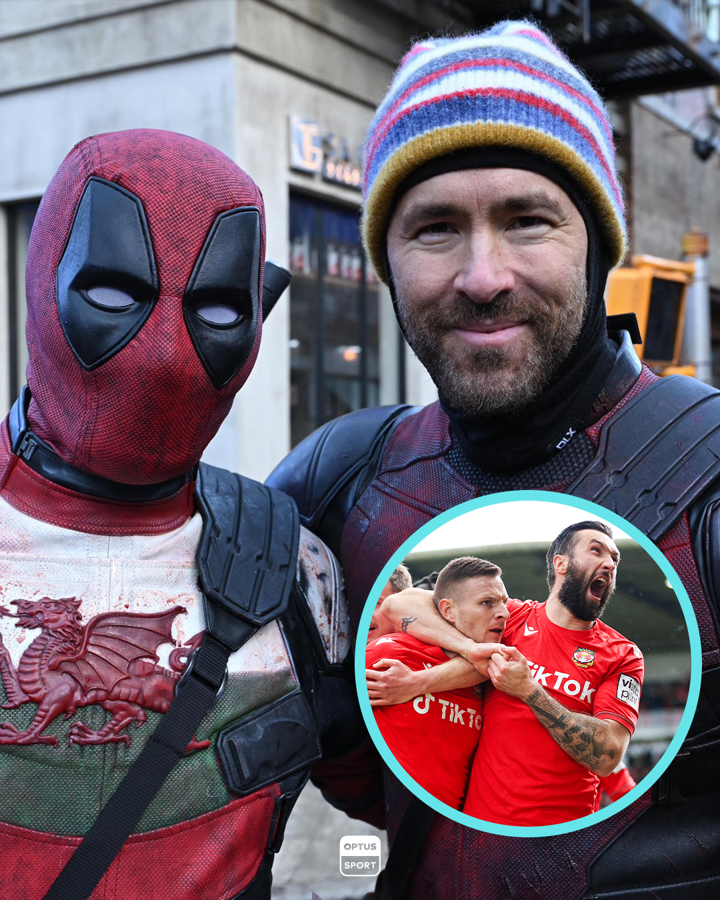

Futbolista en Deadpool y Wolverine
Quién es el futbolista enmascarado que comparte escena con Ryan Reynolds en “Deadpool & Wolverine”.
9 de septiembre de 2024 / 12:00
Quién es el futbolista enmascarado que comparte escena con Ryan Reynolds en “Deadpool & Wolverine”.
9 de septiembre de 2024 / 12:00

‘Deadpool y Wolverine’: Lo que debes saber sobre la película de Ryan Reynolds y Hugh Jackman.
15 de Junio de 2024 / 15:20
El conmovedor relato de Ryan Reynolds sobre las alucinaciones que sufrió su padre a causa del Parkinson.
14 de agosto de 2024 / 13:10